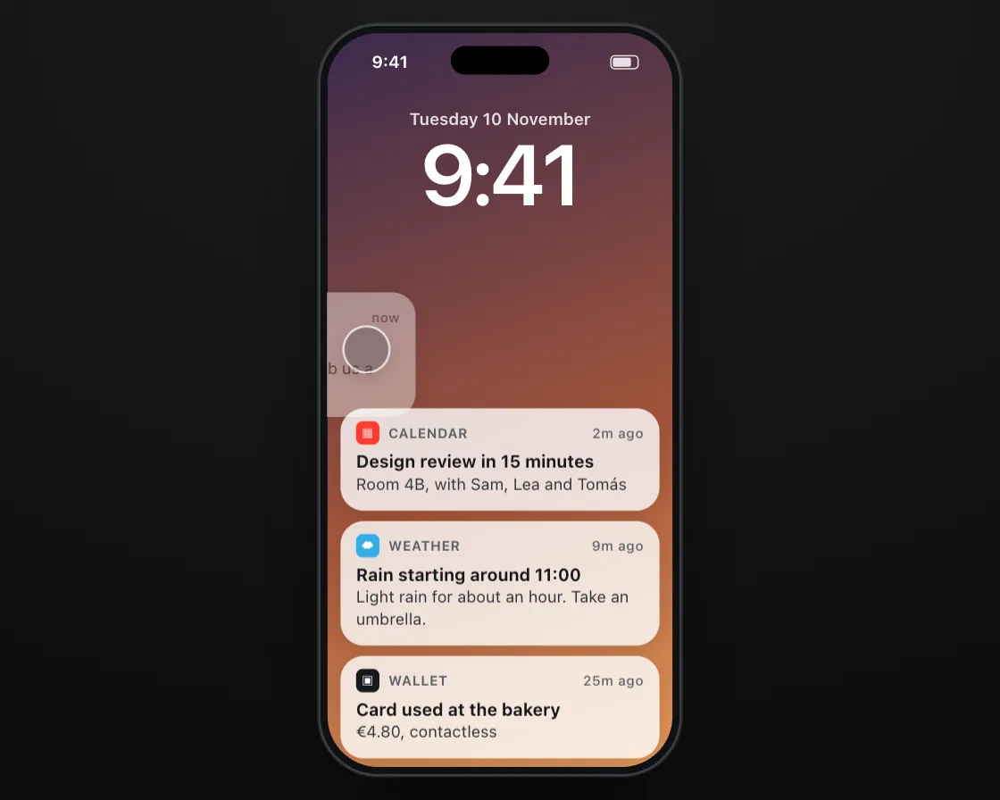

Swipe to dismiss
Swipe to dismiss is a DOM effect: fly off with the throw, rubber-band the wrong way. One plain JavaScript file with no dependencies; add it with npx motion-library add swipe-dismiss.

Open it live, tune it and copy the code
What is Swipe to dismiss?
Flicked notifications leave as the rest spring up to fill the gap; one pulled backwards snaps back.
How does Swipe to dismiss work?
The card tracks the finger 1:1; released far or fast enough it keeps its speed and leaves, otherwise a spring brings it home.
How do I add Swipe to dismiss to my website?
- In your project folder, run
npx motion-library add swipe-dismiss. It writesanimations/swipe-dismiss.js. Needs Node 18 or newer. - Import it and call it with a container element that has a size:
import fx from './animations/swipe-dismiss.js'; const stop = fx(document.querySelector('#hero')); - Call
stop()to clean up, for example when a component unmounts.
Every setting below is also a flag, so you can install it already tuned: npx motion-library add swipe-dismiss --stiffness 700.
What settings can I tweak?
| Setting | Flag | Default | Range | Step |
|---|---|---|---|---|
| Stiffness | --stiffness | 300 | 80 to 700 | 10 |
| Resistance | --constant | 0.5 | 0.1 to 1 | 0.01 |
Specifications
- Renderer
- DOM (CSS and the Web Animations API)
- Category
- Springs & physics
- Dependencies
- None
- File size
- 9.5 KB, unminified
- Interactive
- Yes: it responds to the pointer
- Reduced motion
- Respects prefers-reduced-motion
- Licence
- MIT-0: use it anywhere, no credit needed
Source code
// Swipe to dismiss: on a lock screen a finger flicks a notification off to the left and the ones below spring up to close the gap; then it tugs another one the wrong way and it rubber-bands back.
// While the finger is down the card tracks it 1:1. Let go fast or far enough and it keeps the throw's speed and flies off; otherwise a spring brings it home. Pulled the wrong way, it follows less the further you go, so it says no without feeling stuck.
const PARAMS = { stiffness: 300, constant: 0.5 };
export default function (stage) {
const reduce = matchMedia('(prefers-reduced-motion: reduce)').matches;
const K = 'swd', BG = 'radial-gradient(120% 100% at 50% 0%, #1b1b1e, #0d0d0f)', SC = 'linear-gradient(160deg,#3b2a4d,#a4553a 60%,#e59a5a)', SBC = '#fff';
const n = (app, ic, c, t, m, w) => `<div class="swd-n"><div class="swd-top"><span class="swd-ic" style="background:${c}">${ic}</span><span>${app}</span><em>${w}</em></div><b>${t}</b><p>${m}</p></div>`;
const CSS = `.swd-clock{position:absolute;left:0;right:0;top:58px;text-align:center;color:#fff}.swd-clock small{display:block;font-size:13px;font-weight:600;opacity:.85}.swd-clock b{display:block;font-size:66px;font-weight:600;letter-spacing:-.03em;line-height:1.05}
.swd-list{position:absolute;left:10px;right:10px;top:200px}
.swd-n{position:absolute;left:0;right:0;top:0;padding:10px 12px 11px;border-radius:18px;background:rgba(255,255,255,.8);will-change:transform,opacity;box-shadow:0 4px 14px rgba(40,10,0,.14)}
.swd-top{display:flex;align-items:center;gap:7px;font-size:10.5px;color:#5b6066;font-weight:650;text-transform:uppercase;letter-spacing:.03em}.swd-top em{margin-left:auto;font-style:normal;text-transform:none;font-weight:500}
.swd-ic{width:18px;height:18px;border-radius:5px;display:grid;place-items:center;color:#fff;font-size:10px}
.swd-n b{display:block;margin-top:5px;font-size:13.5px;font-weight:650}.swd-n p{margin:2px 0 0;font-size:12.5px;line-height:1.35;color:#33373c}`;
const HTML = `<div class="swd-clock"><small>Tuesday 10 November</small><b>9:41</b></div><div class="swd-list">
${n('Messages', '✉', '#34c759', 'Priya', 'Running 10 minutes late, grab us a table by the window?', 'now')}
${n('Calendar', '▦', '#ff3b30', 'Design review in 15 minutes', 'Room 4B, with Sam, Lea and Tomás', '2m ago')}
${n('Weather', '☁', '#32ade6', 'Rain starting around 11:00', 'Light rain for about an hour. Take an umbrella.', '9m ago')}
${n('Wallet', '▣', '#15171a', 'Card used at the bakery', '€4.80, contactless', '25m ago')}</div>`;
// ── phone shell: a 280 × 580 phone drawn in CSS, scaled to fit the stage (screen is 266 × 566)
const root = document.createElement('div');
root.className = K + '-root';
root.innerHTML = `<style>
.${K}-root{position:absolute;inset:0;overflow:hidden;background:${BG};font-family:system-ui,-apple-system,"Segoe UI",sans-serif;color:#15171a;user-select:none;-webkit-user-select:none}
.${K}-ph{position:absolute;left:50%;top:0;width:280px;height:580px;border-radius:46px;background:#0f1113;box-shadow:inset 0 0 0 1.5px #3a3f46,0 0 0 1px rgba(255,255,255,.13),0 40px 80px -30px rgba(0,0,0,.8);transform-origin:50% 0}
.${K}-sc{position:absolute;inset:7px;border-radius:39px;overflow:hidden;background:${SC};isolation:isolate;touch-action:none}
.${K}-is{position:absolute;left:50%;top:17px;width:76px;height:22px;margin-left:-38px;border-radius:12px;background:#000;z-index:30}
.${K}-sb{position:absolute;left:0;right:0;top:0;height:44px;padding:0 26px 0 34px;display:flex;align-items:center;justify-content:space-between;font-size:13px;font-weight:650;z-index:29;pointer-events:none;color:${SBC}}
.${K}-sb i{width:22px;height:11px;border-radius:3.5px;border:1.2px solid currentColor;box-sizing:border-box;padding:1px;opacity:.85}.${K}-sb i:after{content:"";display:block;height:100%;width:78%;background:currentColor;border-radius:1.5px}
.${K}-f{position:absolute;left:0;top:0;width:34px;height:34px;margin:-17px 0 0 -17px;border-radius:50%;background:rgba(60,60,67,.32);box-shadow:0 0 0 1.5px rgba(255,255,255,.85),0 4px 12px rgba(0,0,0,.18);z-index:40;pointer-events:none;opacity:0;transition:opacity .2s}
${CSS}
</style><div class="${K}-ph"><div class="${K}-sc"><div class="${K}-sb"><span>9:41</span><i></i></div>${HTML}<div class="${K}-f"></div></div><div class="${K}-is"></div></div>`;
stage.append(root);
const $ = s => root.querySelector('.' + K + '-' + s), $$ = s => [...root.querySelectorAll('.' + K + '-' + s)];
const phone = $('ph'), scr = $('sc'), fingerEl = $('f');
let scale = 1;
const fit = () => { const W = stage.clientWidth, H = stage.clientHeight; scale = Math.min(H * 0.94 / 580, W * 0.9 / 280); phone.style.transform = `translate(-50%, ${(H - 580 * scale) / 2}px) scale(${scale})`; };
const ro = new ResizeObserver(fit); ro.observe(stage); fit();
const finger = (x, y, on, press) => { fingerEl.style.opacity = on ? 1 : 0; fingerEl.style.transform = `translate(${x}px,${y}px) scale(${press ? 0.84 : 1})`; };
// a damped spring step (semi-implicit Euler, 4 substeps), which settles instantly under reduced motion, and Apple's rubber-band curve
const spring = (s, to, k, c, dt) => { if (reduce) { s.x = to; s.v = 0; return; } for (let i = 0; i < 4; i++) { const h = dt / 4; s.v += (-k * (s.x - to) - c * s.v) * h; s.x += s.v * h; } };
const rubber = (o, d, c) => o * d * c / (d + c * Math.abs(o));
// the simulated finger: keys are [ms, x, y, state(0 hidden, 1 hover, 2 pressed), linear?]; real touches take over for 2.5 s
const track = (keys, t) => { let i = 0; while (i < keys.length - 2 && t >= keys[i + 1][0]) i++; const a = keys[i], b = keys[i + 1]; let u = Math.min(1, Math.max(0, (t - a[0]) / ((b[0] - a[0]) || 1))); if (!a[4]) u = u < .5 ? 4 * u * u * u : 1 - Math.pow(-2 * u + 2, 3) / 2; return [a[1] + (b[1] - a[1]) * u, a[2] + (b[2] - a[2]) * u, a[3]]; };
const U = { on: false, x: 0, y: 0, last: -1e9 };
const toLocal = e => { const r = scr.getBoundingClientRect(); return [(e.clientX - r.left) / scale, (e.clientY - r.top) / scale]; };
const pd = e => { U.on = true; [U.x, U.y] = toLocal(e); U.last = performance.now(); try { scr.setPointerCapture(e.pointerId); } catch (_) {} };
const pm = e => { if (!U.on) return; [U.x, U.y] = toLocal(e); U.last = performance.now(); };
const pu = () => { if (U.on) { U.on = false; U.last = performance.now(); } };
scr.addEventListener('pointerdown', pd); scr.addEventListener('pointermove', pm); scr.addEventListener('pointerup', pu); scr.addEventListener('pointercancel', pu);
const unlisten = () => { scr.removeEventListener('pointerdown', pd); scr.removeEventListener('pointermove', pm); scr.removeEventListener('pointerup', pu); scr.removeEventListener('pointercancel', pu); };
let T0 = performance.now(), wasUser = false;
const input = (now, keys, loop) => {
if (now - U.last < 2500) { wasUser = true; finger(0, 0, false); return { x: U.x, y: U.y, down: U.on, t: -1, n: 0 }; }
if (wasUser) { wasUser = false; T0 = now; }
const t = (now - T0) % loop, [x, y, st] = track(keys, t);
finger(x, y, st > 0, st === 2);
return { x, y, down: st === 2, t, n: Math.floor((now - T0) / loop) };
};
const cards = $$('n'), H = cards.map(c => c.offsetHeight + 8);
const st = cards.map(() => ({ x: 0, v: 0, gone: false, y: { x: 0, v: 0 } }));
// ghost finger: flick the top card off to the left; then tug the next one right (the wrong way) and let go
const keys = [[0, 190, 240, 0], [500, 190, 240, 1], [700, 190, 240, 2], [1150, 130, 242, 2], [1170, 130, 242, 2, 1], [1300, 30, 244, 1], [1500, 30, 244, 0],
[3000, 80, 236, 0], [3200, 80, 236, 1], [3400, 80, 236, 2], [4300, 250, 240, 2], [4500, 250, 240, 1], [4700, 250, 240, 0], [7600, 190, 240, 0]];
let grab = null, vel = 0, lastX = 0, prevN = 0, last = performance.now(), raf;
function frame(now) {
const dt = Math.min(0.032, (now - last) / 1000); last = now;
const f = input(now, keys, 7600);
if (f.t >= 0 && f.n !== prevN) { prevN = f.n; st.forEach(s => { if (s.gone) { s.gone = false; s.x = -300; s.v = 0; } }); } // new loop: dismissed card slides back in
const k = PARAMS.stiffness, c = 2 * Math.sqrt(k) * 0.8;
let yy = 200;
const tops = st.map((s, i) => { const t = yy; if (!s.gone) yy += H[i]; return t; });
if (f.down && !grab) { const i = st.findIndex((s, j) => !s.gone && f.y >= tops[j] && f.y < tops[j] + H[j]); if (i >= 0) { grab = { i, fx: f.x, x0: st[i].x }; lastX = f.x; vel = 0; } }
if (grab && f.down) {
const s = st[grab.i]; vel = vel * 0.6 + ((f.x - lastX) / Math.max(dt, 0.001)) * 0.4; lastX = f.x;
const raw = grab.x0 + f.x - grab.fx;
s.x = raw > 0 ? (reduce ? 0 : rubber(raw, 246, PARAMS.constant)) : raw; s.v = vel; // left is allowed, right rubber-bands (reduced motion: right is a hard stop)
} else if (grab) { const s = st[grab.i]; if (s.x < -90 || s.v < -500) { s.gone = true; s.v = reduce ? 0 : Math.min(s.v, -900); s.t = now; } grab = null; }
let y = 0;
st.forEach((s, i) => {
if (!grab || grab.i !== i) { if (s.gone) s.x += s.v * dt; else spring(s, 0, k, c, dt); }
if (!(reduce && s.gone)) spring(s.y, y, k, c, dt); if (!s.gone) y += H[i];
cards[i].style.transform = `translate(${s.x}px, ${s.y.x}px)`;
cards[i].style.opacity = reduce ? (s.gone ? Math.max(0, 1 - (now - s.t) / 200) : 1) : s.gone ? Math.max(0, 1 + (s.x + 100) / 180) : 1; // reduced motion: a dismissed card fades where it was let go
});
raf = requestAnimationFrame(frame);
}
raf = requestAnimationFrame(frame);
return () => { cancelAnimationFrame(raf); ro.disconnect(); unlisten(); root.remove(); };
}